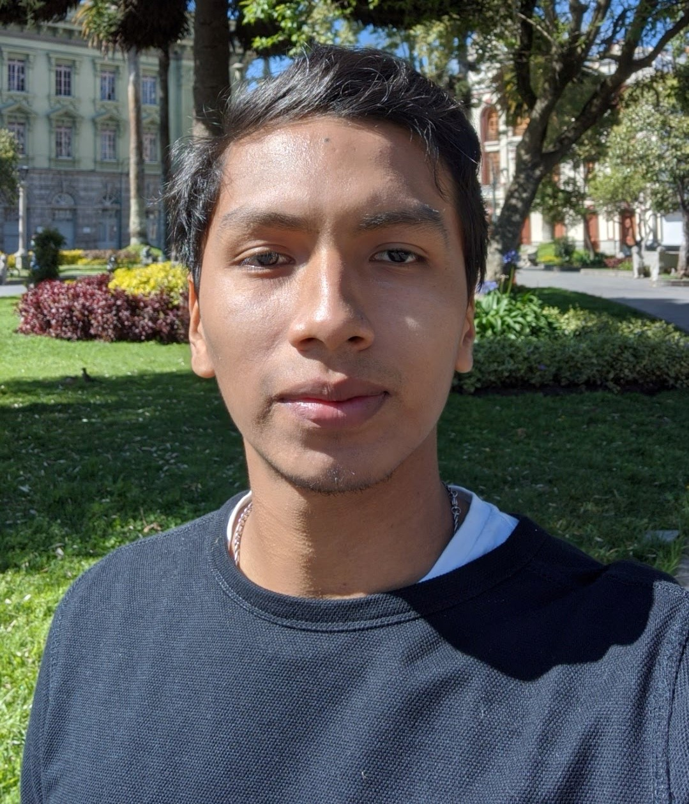

Mi Ciudad

Soy estudiante de ingeniería en ciencias computacionales en la Escuela Superior Politécnica del Litoral, la mejor universidad pública del Ecuador. Me considero una persona que disfruta del día a día y no se deja llevar por malos ratos, puedo ser gracioso dependiendo de las circunstancias y también soy buen oyente cuando se necesita de un amigo. Me gusta hacer deporte como natación, basketball y fútbol, disfruto pasar tiempo con amigos y con mi familia. Siento un interés muy grande por aprender cada día acerca de las nuevas tecnologías con las cuales podemos hacer de nuestra vida más fáciles a lo largo del tiempo.
| Nombre | Ver | Año |
|---|---|---|
| Base de datos | Click aquí | 2021 |
| Máquina expendedora | Click aquí | 2021 |
| Sistema de turnos en hospital | Click aquí | 2020 |
Deja tu correo electrónico y estaremos en contacto!